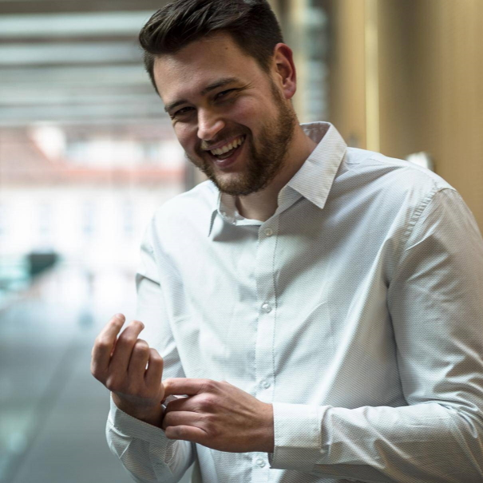

Markus Wieland, M.Sc.

My research focuses on the accessible design of VR for people with visual impairments. In the context of social VR spaces, I try to make non-verbal signals (e.g., eye contact, facial expressions, and gestures) perceivable during a conversation in VR for people with visual impairments via other sensory modalities. Of course, the substituted non-verbal signals must always be adapted to the context and be unobtrusive so that they do not override other sensory modalities of people with visual impairment in a conversation. This requires a user-centric approach to develop usable solutions. The overall goal of my research is always to increase the accessibility of VR.
Research Interests
- HCI
- Accessibility
- Cognitive Ergonomics
- Human Factors
- VR/AR